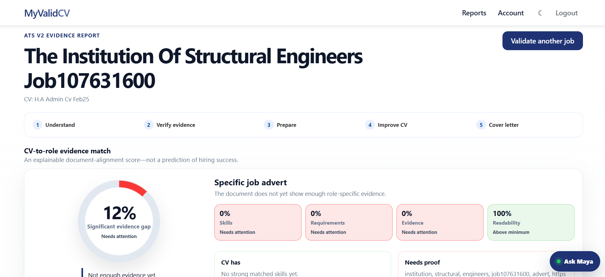
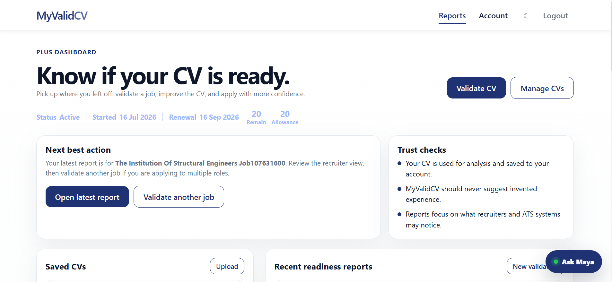

MyValidCV
Visual story · no sound
A better application starts before “Send”
Why MyValidCV users can improve their interview chances
Not by gaming an ATS. By showing the right, truthful evidence for the role.
The common mistakeOne CV.
One CV.
Every job.
Many applicants use the platform as a keyword counter—or send the same CV before acting on the report.
×Copy keywords without supporting evidence
×Ignore mandatory role requirements
×Apply before making the priority fixes
A low score is useful
It shows what a recruiter may not find.
MyValidCV separates readability from skills, requirements and evidence—so users know what needs attention.

Do not hide a gap with clever wording. Add proof only when it is true.
Use it the right wayValidate.
Validate.
Verify.
Improve.
The strongest journey is simple and evidence-led.
1Add the CV and exact job advert
2Review matched and missing evidence
3Make the priority changes first
4Apply with a clearer, role-specific CV
Keep the next action clear
One report should lead to the next best action.
The dashboard brings saved CVs, recent readiness reports and the next validation into one focused workspace.

Go beyond the score
Turn findings into a stronger application.
Plus helps job seekers prepare role-specific documents without inventing experience.
Choose the right serviceStart where you are.
Start where you are.
Upgrade when it helps.
Job seekers and hiring teams use the same evidence-first principle in different ways.
Five CV-to-job checks each month.
More checks, tailored CVs and cover letters.
Compare applicants, check evidence and build a ranked shortlist.
Your evidence. Better aligned.
Make the CV easier to understand—and easier to shortlist.
See the match. Fix what matters. Apply with greater confidence.
Validate your CV free →MyValidCV provides application guidance and does not guarantee interviews or employment.1 / 8